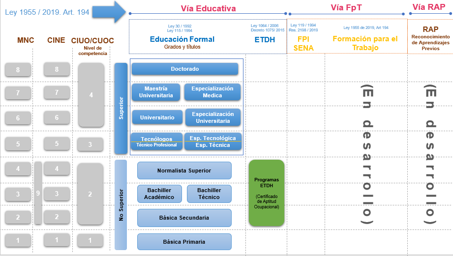

El Marco Nacional de Cualificaciones está organizado en ocho (8) niveles de cualificación, determinados por un conjunto de descriptores, que especifican los Resultados de Aprendizaje para cada nivel en términos de conocimientos, destrezas y actitudes, aplicables en el contexto de estudio, trabajo o en ambos.
| MNC | CONOCIMIENTOS | DESTREZAS | ACTITUDES |
|---|---|---|---|
| 8 | Posee conocimientos altamente avanzados en la frontera de un campo disciplinar o interdisciplinar o de un contexto productivo. Crea o redefine principios, teorías, productos, soluciones y nuevas metodologías de trabajo o estudio | Crea o redefine conocimientos para resolver problemas críticos y multidimensionales
en contextos impredecibles de un campo disciplinar o de trabajo, mediante la
generación de nuevas metodologías de investigación y el uso de habilidades y
técnicas avanzadas y especializadas. Sustenta de manera clara los resultados procedentes de la investigación científica y tecnológica a un público especializado o no, en un ámbito de la innovación más avanzada. |
Actúa con autonomía y responde por decisiones estratégicas que generan cambios
sociales, económicos y culturales. Demuestra integridad académica y laboral y compromiso continuo respecto al desarrollo de nuevos conocimientos o procesos. |
| 7 | Posee conocimientos avanzados para el desarrollo de la investigación científica, aplicada y de alta tecnología en un campo de estudio o para la dirección de áreas de organizaciones del sector productivo en un campo de trabajo. | Formula y desarrolla, soluciones innovadoras y creativas a problemas complejos que
requieren el desarrollo de proyectos estratégicos o de investigación y la aplicación de nuevos enfoques técnico –
científicos en contextos impredecibles y multidisciplinarios. Analiza, sintetiza, evalúa y comunica información estratégica y compleja en un contexto de trabajo o estudio. |
Demuestra autonomía y responsabilidad en la toma de decisiones para formular y
desarrollar proyectos estratégicos o de investigación. Asume la responsabilidad de recursos y de grupos de trabajo o de investigación para lograr los resultados esperados en contextos de trabajo o estudio. |
| 6 | Posee conocimientos teóricos prácticos amplios e integrados de diferentes teorías, perspectivas y enfoques en un campo
especifico de trabajo o estudio. Analiza información específica en la gestión de proyectos y procesos. |
Define y gestiona proyectos y procesos en un campo de trabajo o estudio, mediante el análisis y evaluación de información específica en contextos variados. Ppropone soluciones a problemas disciplinarios e interdisciplinarios; diseña o mejora procesos con nuevos métodos y procedimientos. Analiza y comunica información, conocimientos, ideas y soluciones en el ámbito educativo y laboral. | Actúa con autonomía y responsabilidad en la toma de decisiones sobre talento humano, recursos administrativos,
financieros y técnicos, responde por los resultados de proyectos y procesos en contextos variados de su campo de trabajo
o estudio. Orienta y evalúa equipos de trabajo o estudio para el logro de objetivos. |
| 5 | Posee conocimientos teóricos, prácticos y tecnológicos específicos en un campo de estudio o trabajo. Integra y transfiere saberes para innovar procesos. | Aplica métodos, técnicas y tecnologías especializadas en la resolución de problemas variados o en la implementación y coordinación de procesos, analiza y comunica información generada en un ámbito de trabajo o estudio. | Responde y supervisa las actividades de otros en contextos de trabajo o estudio; coordina y toma decisiones por el trabajo técnico y operativo de los procesos y asume la responsabilidad por recursos físicos y tecnológicos. |
| 4 | Posee conocimientos teóricos y prácticos necesarios para la interpretación y desarrollo de procedimientos, métodos y técnicas en contextos de estudio o trabajo. | Selecciona y aplica procedimientos en la realización de actividades rutinarias y no rutinarias, y soluciona problemas en contextos predecibles y a veces impredecibles | Trabaja o estudia con autonomía, supervisa el trabajo rutinario de otros, asume responsabilidades por los procedimientos y los cambios que puedan generarse en su contexto. |
| 3 | Posee conocimientos teóricos y prácticos generales de conceptos, principios, técnicas, métodos y procedimientos en contextos de estudio o trabajo. | Aplica técnicas y métodos y opera equipos en la realización de actividades rutinarias y solución de problemas en contextos conocidos de trabajo o estudio. | Trabaja o estudia con autonomía y responsabilidad en la ejecución de las actividades asignadas. Requiere supervisión sobre los resultados de su aprendizaje o desempeño laboral. |
| 2 | Posee conocimientos teóricos y de hechos asimilando información básica en contextos de estudio o trabajo. | Realiza actividades rutinarias, utiliza instrumentos y resuelve problemas sencillos en contextos conocidos de trabajo o estudio. | Trabaja o estudia y supervisión moderada y responde por la ejecución de las actividades asignadas. |
| 1 | Posee conocimientos de hechos elementales para actuar en el contexto social, educativo o productivo que facilita el aprendizaje a lo largo de la vida. | Ejecuta tareas simples y repetitivas siguiendo instrucciones detalladas y específicas en contextos conocidos de trabajo o estudio. | Trabaja o estudia bajo supervisión directa y responde por las tareas asignadas. |
Fuente: Mesa de concertación, 2019.
Se entiende por:
Descriptor de nivel. Delimita de manera genérica los Resultados de Aprendizaje de cada uno de los niveles del Marco Nacional de Cualificaciones (MNC), expresados en términos de conocimientos, destrezas y actitudes, aplicables en contextos de trabajo, estudio o en ambos. Son de carácter orientativo y se constituyen en un referente para organizar las cualificaciones en cada nivel.
Conocimiento. Es uno de los descriptores de la matriz del Marco Nacional de Cualificaciones (MNC) y se refiere al resultado de la asimilación de información por medio del aprendizaje, acervo de hechos, principios, teorías y prácticas relacionados con un campo de trabajo o estudio concreto.
Destreza. Es uno de los descriptores de la matriz del Marco Nacional de Cualificaciones (MNC) relacionado con la capacidad de una persona para aplicar conocimientos y utilizar técnicas, con el fin de realizar tareas y resolver problemas en un campo de trabajo o estudio. Las destrezas pueden ser capacidades cognitivas (uso del pensamiento lógico, intuitivo y creativo) y prácticas (destreza manual y uso de métodos, materiales, herramientas e instrumentos).
Actitud. Es uno de los descriptores de la matriz del Marco Nacional de Cualificaciones (MNC) y se enfoca en la autonomía, responsabilidad y la disposición que tienen las personas para actuar y pensar en diferentes contextos.
Autonomía. Capacidad de una persona para tomar decisiones, actuar en un contexto con autodeterminación y asumir los resultados.
Responsabilidad. Hace referencia al compromiso personal y social, al respeto y la valoración del deber en el ámbito de la educación, formación y el trabajo.
El Marco Nacional de Cualificaciones es un instrumento articulador que integra las vías de cualificación educativa, la del subsistema de formación para el trabajo y la del reconocimiento de aprendizajes previos. En este sentido, a continuación, se presenta un análisis preliminar de la correspondencia entre el sistema educativo formal del país con la Clasificación Internacional Normalizada de Educación de la UNESCO -CINE- adaptada para Colombia, la Clasificación Internacional de Ocupaciones -CIUO-08 A.C-, Clasificación Única de Ocupaciones (CUOC) y los descriptores de nivel de la matriz de descriptores.

Fuente: MEN, 2021